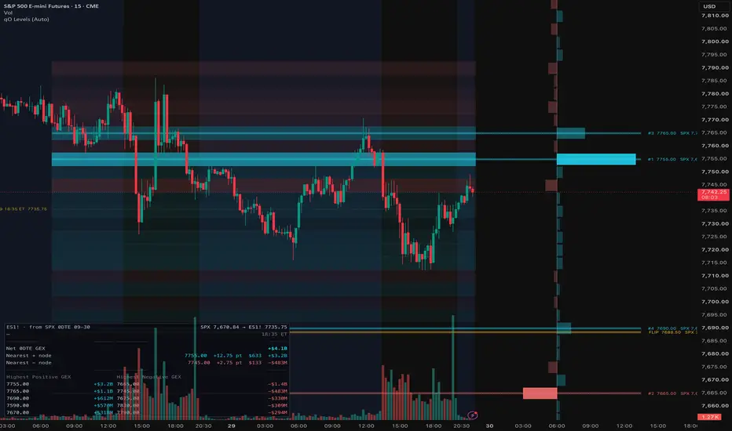

OBJETIVO
Para que serve
Transformar um snapshot produzido por quantedOptions/quantedGamma em níveis e perfil de exposição legíveis em qualquer gráfico compatível, incluindo proxies como ETF → futuro.
Indicador Pine v6 para visualização avançada de Walls, Gamma/DEX, top strikes, ladder de exposição e conversão entre instrumentos correlatos.
OBJETIVO
Transformar um snapshot produzido por quantedOptions/quantedGamma em níveis e perfil de exposição legíveis em qualquer gráfico compatível, incluindo proxies como ETF → futuro.
INPUT
String versionada no formato qo1|TICKER|DATA|HORA|SPOT|COHORT|..., contendo net gamma, Call/Put Wall, Gamma Flip, Gamma C/P, DEX C/P, top strikes e perfil por strike.
CÁLCULOS
VISUALIZAÇÃO
REFERÊNCIA VISUAL

AUTOMAÇÃO
Média. O uso no TradingView é simples — copiar o snapshot e colar — mas a aquisição e o cálculo dos níveis dependem de um gerador externo que não faz parte do Pine preservado.
INSTALAÇÃO
Instalação do Pine disponível. O indicador pode ser instalado no TradingView. O gerador externo de snapshots não faz parte do código arquivado e é tratado como dependência separada.
LIMITAÇÕES
CÓDIGO-FONTE
COMPARAÇÃO
Supera os demais indicadores em visualização GEX e conversão entre proxies. O EWZ GEX → WIN é mais forte na proposta de aquisição/automação; o Support & Resistance possui alertas mais amplos; o EWZ Mapa OI preserva mais informação primária da cadeia.